Банк
горящих туров
Путь от поиска тура до оплаты — за пять экранов. На десктопе и в телефоне.
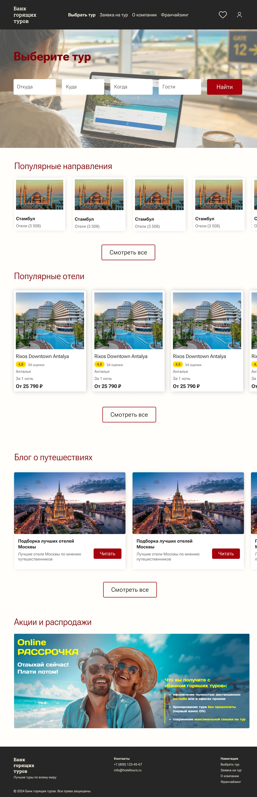
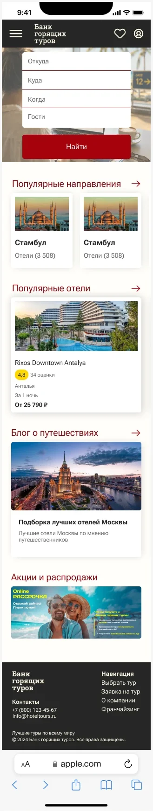
01 — О проекте
Горящий тур покупают быстро — каждый лишний шаг стоит продажи
Задача
Сделать редизайн веб-сервиса бронирования туров и спроектировать мобильную версию: от поиска до подтверждения оплаты.
Аудитория
Люди, которые хотят уехать скоро и выгодно. Решение принимают быстро, часто — с телефона, сравнивая несколько отелей.
Идея
Линейный сценарий: каждый экран отвечает на один вопрос пользователя и ведёт к следующему шагу. Красный — только для действий.
Проблема
Пользователь теряется по дороге к оплате
На текущем сайте выдача перегружена длинными текстовыми описаниями, фильтров мало, а на странице отеля условия и номера спрятаны под простынёй текста. Человек устаёт искать и уходит к конкуренту.
02 — UX-аудит
Где ломается сценарий
01
Главная из текстовых списков
Направления — строками без фото, треть экрана занимают адреса офисов. Вдохновиться и выбрать сложно.
02
Выдача-простыня
Всего шесть фильтров, а в каждой карточке — длинный абзац «КРАТКО». Сравнить отели глазами почти невозможно.
03
Отель без структуры
Описание сплошным текстом и 12 аккордеонов. Номера и отзывы — далеко внизу страницы.
Решение — линейный путь: один экран = один вопрос пользователя.
03 — Было и стало
Исходный сайт и редизайн
Слева — текущий сайт bankturov.ru (скриншоты от 8 октября 2026), справа — моя версия тех же экранов. Нажмите «+», чтобы рассмотреть страницу целиком.
Главная
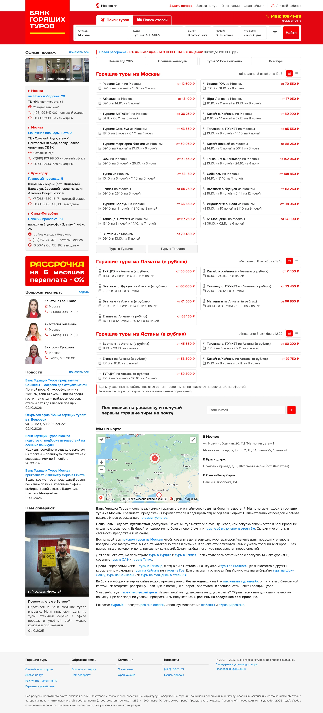
Было
Форма поиска в красной шапке, ниже — горящие направления текстовыми строками и колонка с адресами офисов.
Стало
Поиск на фото первого экрана, подборки направлений и отелей карточками с фото и ценой, блог и акции — ниже.
Выдача и фильтры
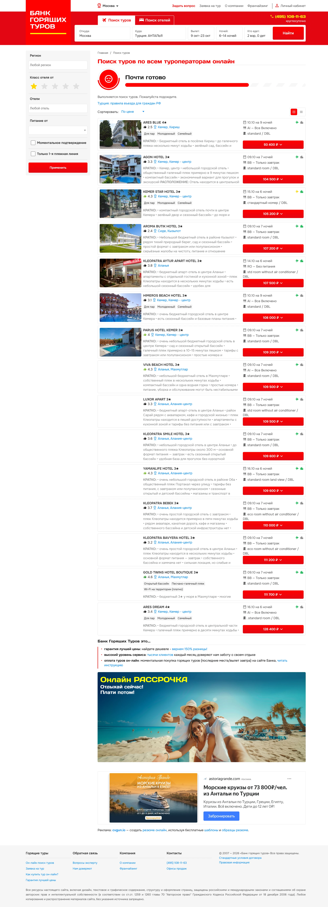
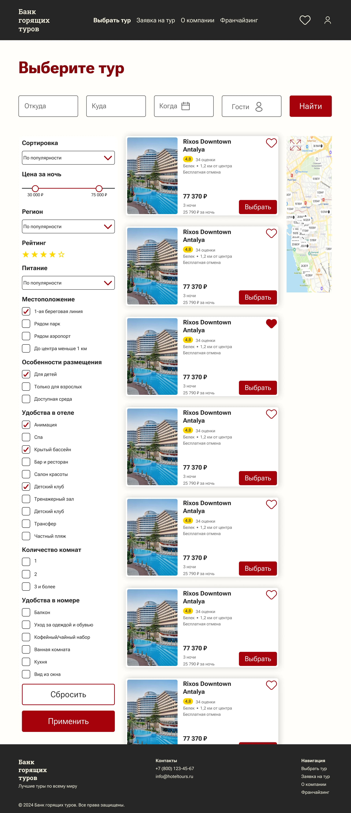
Было
Шесть фильтров, длинное описание «КРАТКО» в каждой карточке, баннер и реклама внутри выдачи.
Стало
10 групп фильтров, карта рядом с выдачей, компактная карточка: фото, рейтинг, число отзывов, цена и кнопка «Выбрать».
Страница отеля
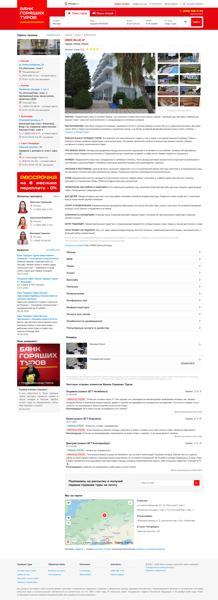
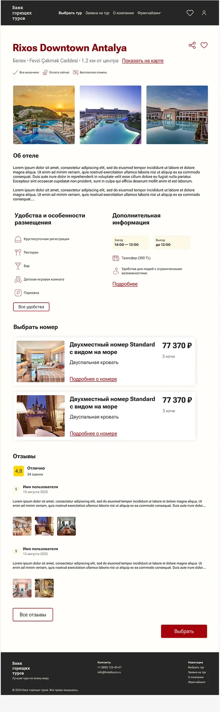
Было
Текстовое описание на весь экран, 12 свёрнутых разделов, номера и отзывы в самом низу, слева — офисы продаж.
Стало
Ключевые условия под названием, удобства и время заезда отдельными блоками, номера карточками с ценой, отзывы с общей оценкой.
04 — User flow
Пять шагов до отпуска
Куда и когда?
Форма поиска и подборки
Что есть?
Популярные отели по запросу
Что подходит мне?
Фильтры, карта, сортировка
Здесь хорошо?
Условия, номера, оценки
Всё верно?
Резюме бронирования
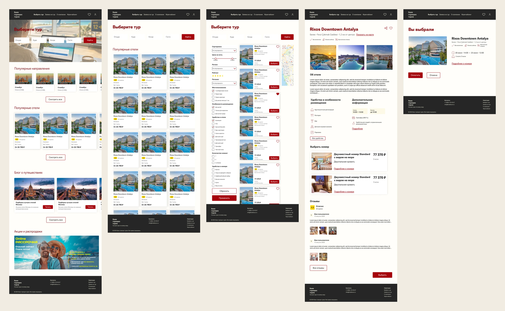
05 — Решения
Что изменилось на каждом шаге
Поиск — главный герой первого экрана
Форма «Откуда — Куда — Когда — Гости» стоит на первом экране и сразу ведёт к результату. Ниже — подборки для тех, кто ещё не решил.
- Популярные направления и отели — старт без ввода данных
- Блог о путешествиях вдохновляет и удерживает
- Акции в конце — не мешают основному сценарию
10 групп фильтров вместо простыни
Параметры разбиты по логике выбора: цена, регион, рейтинг, питание, местоположение, удобства в отеле и номере. Рядом — карта.
- Слайдер цены вместо полей ввода
- «Применить» и «Сбросить» всегда на виду
- В карточке: рейтинг, число отзывов, цена
Порядок блоков = порядок вопросов туриста
Как выглядит → что включено → когда заезд → какой номер → что говорят другие.
- Под заголовком: «Всё включено», «Бесплатная отмена»
- Заезд и выезд — на заметных плашках
- Общая оценка и фото гостей в отзывах
Финальная проверка в одном экране
Отель, даты, гости и условия — коротким резюме. Пользователь видит всё сразу и уверенно нажимает «Оплатить».
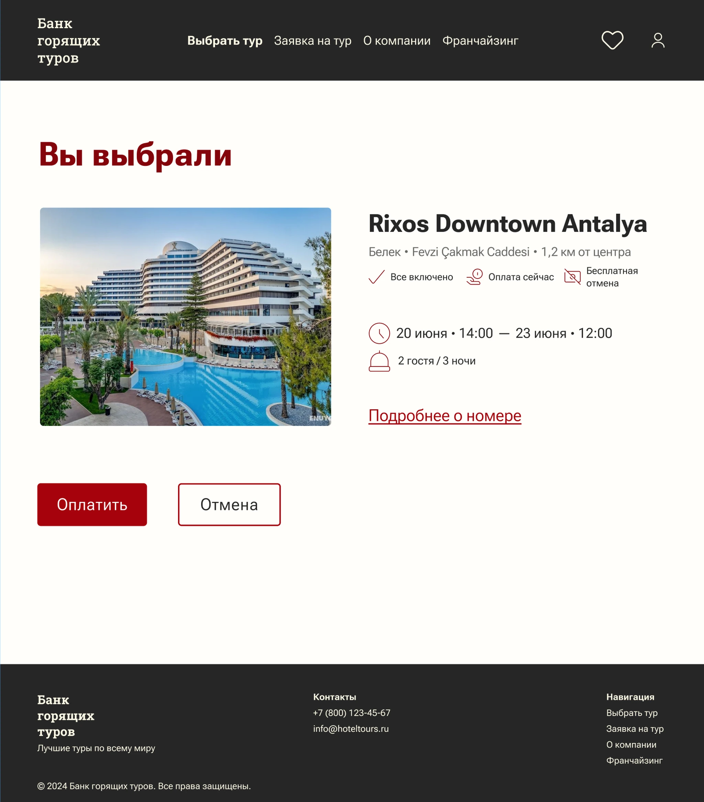
06 — Мобильная версия
Не уменьшенная копия, а свой сценарий
Главное решение — фильтры уходят в полноэкранную шторку и не перекрывают выдачу. Экраны можно прокрутить.
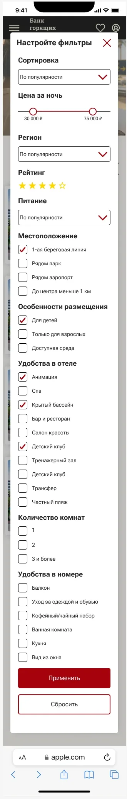
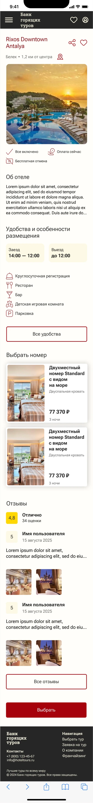
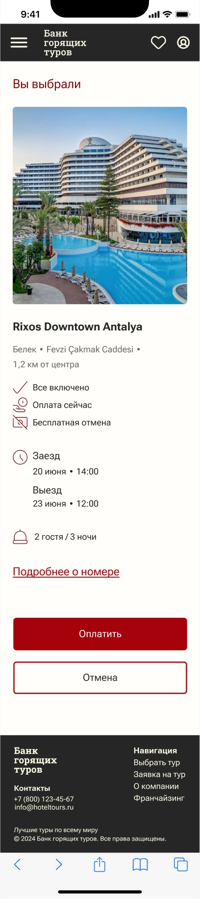
Быстрые фильтры лентой
Сортировка и частые фильтры — горизонтальной лентой над выдачей.
Кнопки под палец
«Выбрать» и «Оплатить» на всю ширину экрана.
Одна колонка
Карточки отелей с крупным фото — удобно листать.
07 — Визуальный язык
Строгий интерфейс, один горячий акцент
Глубокий красный — цвет «горящего» предложения — только для действий и заголовков. Тёмные шапка и подвал собирают страницу в рамку, тёплый фон делает её мягче.
Горящий
#A50F12
Кнопки, заголовки
Графит
#262626
Шапка, подвал
Рейтинг
#FFD83A
Оценки, плашки
Тёплый фон
#FFFDF7
Фон страниц
08 — Итог
Понятный путь на любом устройстве
Нужен сервис, в котором пользователь не теряется по дороге к цели? Напишите — обсудим ваш проект.